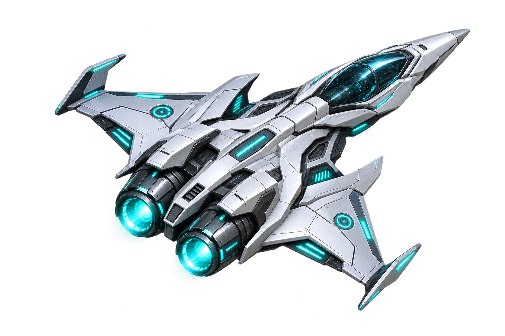
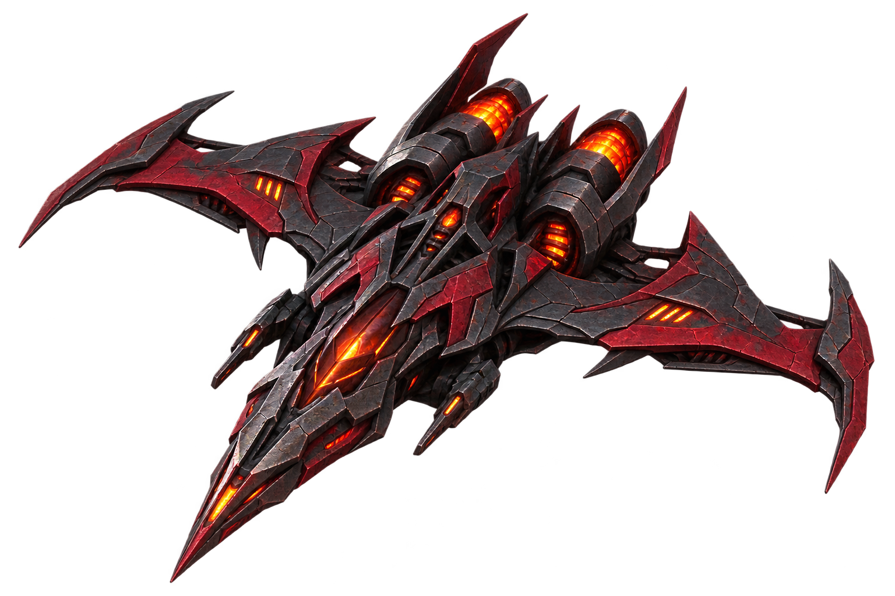
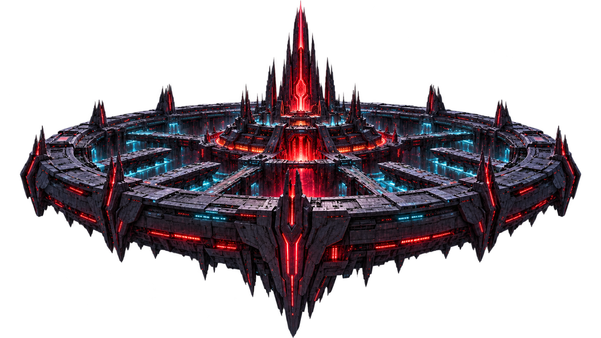

01HELIOS OUTPOSTQ1 · พื้นฐาน
01HELIOS OUTPOSTQ1 · พื้นฐาน

✦
DEGREE CORE · 01
FLIGHT CONFIGURATIONHELIOS SYSTEM · ROUTE 01
เลือกโหมดการบิน หน่วยองศาหรือเรเดียน และความยากก่อนออกเดินทาง
ROUTE PROGRESSIONเส้นทางความคืบหน้า · ระดับความคืบหน้าแคมเปญ
01HELIOS OUTPOSTQ1 · พื้นฐาน 02MIRROR BELTQ2 · การสะท้อน
02MIRROR BELTQ2 · การสะท้อน
★NOX COMMAND BASENULL ARMADA · FINAL BOSS